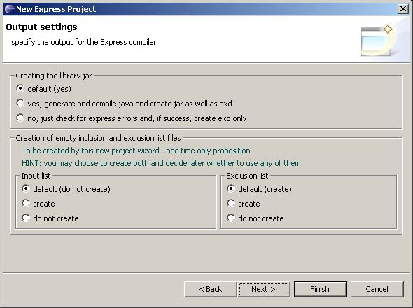
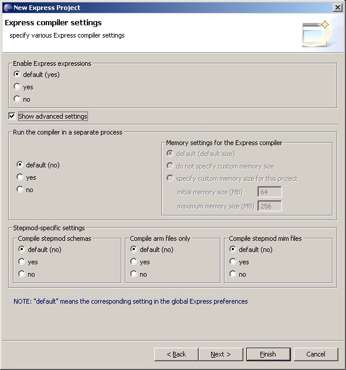

Figure 3. New Express
Project wizard, Input - output settings dialog window to specify
the input and output for the Express compiler
The
Express
compiler settings dialog window appears (see
Figure 4)
to specify various Express compiler settings (refer the
Express
Compiler Advanced Settings for detailed info):
Note.
The "default" means the corresponding setting in the global Express
preferences.
- Enable expressions:
default, yes or no.
- Check the Show advanced
settings box to to activate the Run compiler in a separate process
land Stepmod-specific settings
layouts:
- Run the compiler in a separate
process layout:
- default - in Figure 4 the Memory setting for the Express compiler
layout is disabled, because in global Express preferences the option to
use the separate process is not chosen, and vice versa;
- yes - select this
box,
if you want to run Express compiler in a separate process. The Memory setting for the Express compiler
layout is enabled:
- default;
- do not specify custom
memory
size - to use the default memory settings, specified in the
global Express preferences;
- specify custom memory size
for this project - after this box is selected the below fields
are enabled with initial values:
- initial memory size (MB)
- enter an applicable value;
- maximum memory size (MB)
- enter an applicable value.
- no - if this box is
chosen, the Memory settings for the
Express compiler layout is disabled.
- Stepmod-specific settings layout:
- Compile stepmod schemas
- default, yes or no;
- Compile arm files only
- default, yes or no;
- Compile stepmod mim files
- default, yes or no.
Note.
The "default" means the corresponding settings in the global Express
preferences.
- Click Finish button
to create a Project without setting further options or click Next button to go
to the next wizard window.

Figure 4. New Express Project
wizard, Express compiler settings dialog window to specify
various Express compiler settings
 (create new
Express project) button on the Eclipse tool bar;
(create new
Express project) button on the Eclipse tool bar;